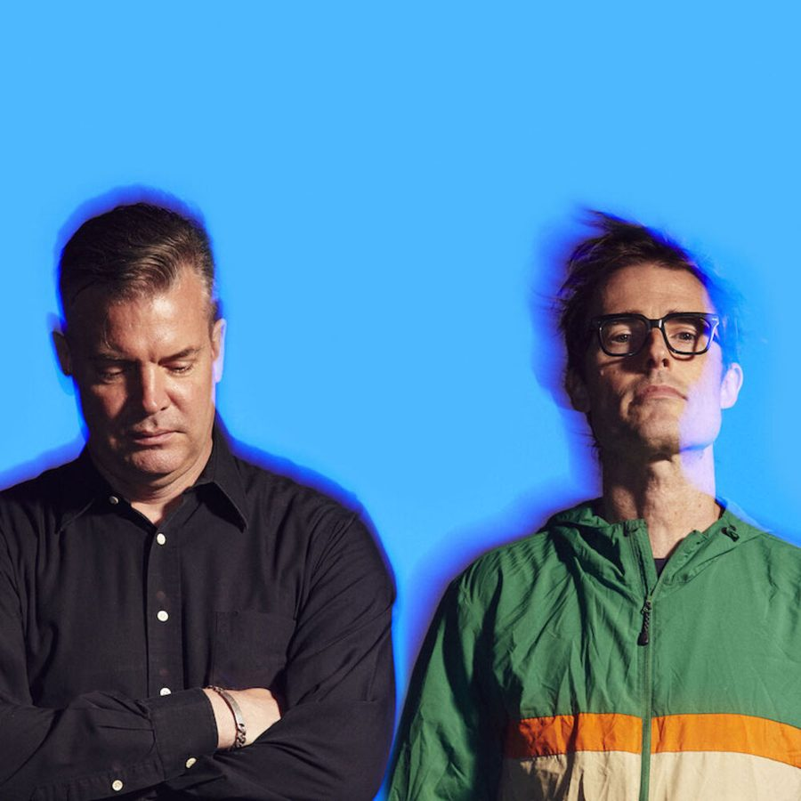

Battles: Paving a different road


The last 12 months have been mighty productive for US art-rockers Battles. While they’re the end result of the coming together of ex members from bands like Helmet, Don Caballero and Lynx, they’ve quickly been able to transcend any such associations. While they’d released a number of earlier EPs, last year they dropped their first full-length album Mirrored and the hype has continued to build around them ever since. According to guitarist Ian Williams, they’re pretty chuffed with how it’s been received. Even more so if you factor in its avant-garde approach to musicality, which reflects his earlier work with notorious ‘math rock’ act Don Caballero. What you hear on the debut Battles album is far from your standard fare.
“We basically make the kind of music we want to listen to and hear,” says Ian. “And you sort of think that if I like it, then everybody else should like it. But you never really know what everyone else is going to think, so it’s nice that there’s been a good reception. And it’s definitely gone beyond that sort of core audience that would normally pay attention to a band like us. If you can make stereotypes, that is…” And you know exactly what he’s talking about: the sort of nerdy, bespeckled prog-rock lover that would have been into Ian’s earlier musical incarnations.
And on one level, it is surprising that Battles are enjoying so much success. While there’s definitely a lot to like in their music, the boys do as much as they can to subvert the traditional rock verse/chorus/verse structure, which means it’s never going to be as accessible in a traditional sense. Are they surprised at how much they’ve been embraced? “Well, I don’t think we knew,” Ian says. “We didn’t realise it was going to be this well received. But we have a lot of different influences, we all come from very different backgrounds so the music gets put together in a way that we try and reflect that. That’s all that’s motivating us – we’re just trying to find a way to combine all of our elements as musicians into the one piece of music.”
And Ian is someone in particular who has always had musical history of pushing out against the edges, and trying to do something different: he spent ten years as part of Don Caballero, an instrumental rock act who were tagged with the before-mentioned ‘math rock’ term, famous for their tendency to lean towards the more experimental and leftfield with their musical output. Is it a challenge trying to strike the balance between doing something a little different, and keeping it listenable for the audience? Is this something the band is conscious of when they’re in the studio?
“Sometimes I feel like I haven’t really given a shit at all about the audience: I just purely mean to occupy the extreme fringe and it’s a case of, ‘I’ve been to the North Pole before anyone! Nobody else could withstand it, but I did!’” he laughs. “But the challenge of Battles is that all of us are trying to make music together, so there’s a lot of compromise among the different members; seeing things differently, and sometimes these compromises lead to the creation of more accessible channels in Battles’ music.
“So while I don’t think we’re necessarily trying to make it more accessible, sometimes it happens naturally. For one thing, there are vocals on this record and looking at our live show, we’re very visceral and we put a lot of energy into playing. The simple old rule, ‘it needs to have a beat and you have to be able to dance to it,’ sort of applies in this case.”
Fans in Australia might have caught the band last year when they played a series of club gigs around the country. But they’re about to return as part of the Big Day Out national festival juggernaut. Does their music work well in a festival environment? “Festivals can be great, but they can be tough at the same time. If it’s a well run festival it can be great, you can play to a whole bunch of people and you get to play your show in the same way that you want to pull it off. Sometimes you have to make some compromises, just because of time constraints, lighting, sound and all these crazy things because it’s not really your show. In a club show you can control the environment more, but with festivals you can be playing to thousands and thousands of people.”
And the unpredictable nature of festivals can often bring a certain charm of their own. “The thrill of the scale of it can make up for the fact that you’re setting up your electronic equipment in a puddle of mud, and you have to go and pee in the woods after you play your show. And you’re rocking it on stage in wet, soggy socks!” he laughs.
Battles’ debut album Mirrored is out now through Warp/Inertia, and you can catch them at the following dates and sideshows during the Big Day Out tour later this month …
Sun Jan 20 – Big Day Out, Gold Coast
Tues January 22nd: Brisbane, The Zoo
Wed Jan 23 – Beck’s Festival Bar, Hyde Park Barracks
Fri Jan 25 – Big Day Out, Sydney
Mon Jan 28 – Big Day Out, Melbourne
Tues January 29th: Melbourne, Billboard
Fri Feb 1 – Big Day Out, Adelaide
Sun Feb 3 – Big Day Out, Perth
And check out a ‘Behind the Scenes’ clip on the making of their Tonto music video.